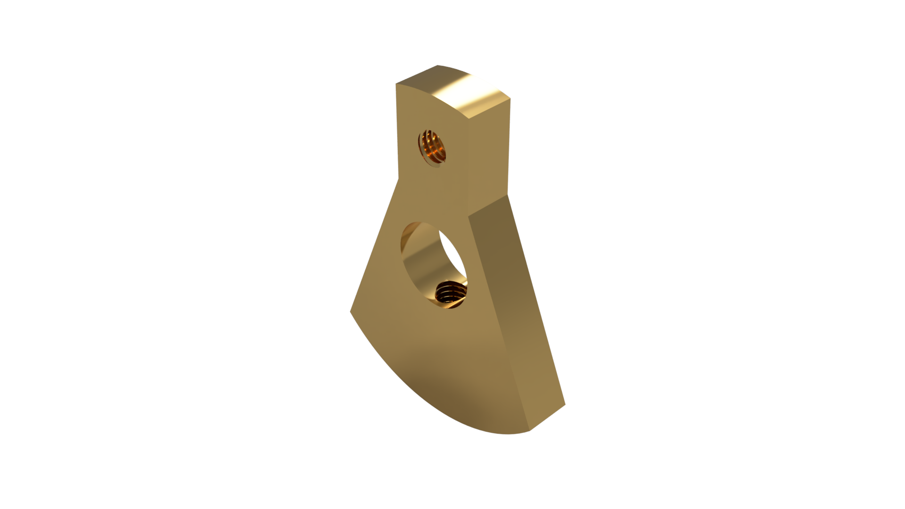

Case Studies
Fysisk Validering
Flame Eater MK2
Vakuum motor system udviklet med strenge krav til termisk balance. Systemets tæthed og funktion beror udelukkende på tolerancerne i cylinder- og stempelsamlingen.
Tolerancer
H7 / f7 Pasning
Materialer
Støbejern, SS316, Messing

CAD Data

Live QA

Komponent Analyse
Crankweb Assembly
Kritisk komponent til krumtapsmekanisme. Absolut concentricity er påkrævet for at eliminere vibrationer. Komponenten er produceret og dokumenteret live i maskinen, verificeret med analog passerdorn, før endelig frigivelse.
Verificering
Ø7h7 Analog Dorn
Materiale
Messing MS58